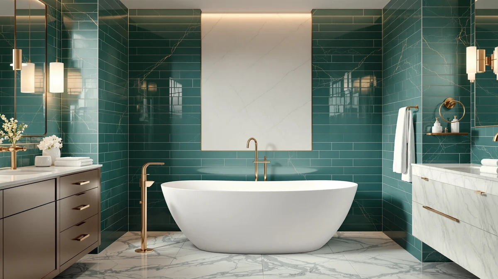

burblewell Teardrop Solid Surface Stone Resin Freestanding Bathtub Review (2026): Worth It?
Prices and picks verified as of November 2026. Independent, reader-supported reviews.


Quick Answer
This burblewell Teardrop Solid Surface Stone Resin Freestanding Bathtub review points to the 67" Matte White Teardrop Solid as the strongest pick for a bathroom with room for a full-length soak, thanks to its 67 inch teardrop profile and solid surface stone resin build named directly in the listing. If you need a shorter footprint or want to save money, the three MEDUNJESS alternatives below trade that extra length or confirmed stone resin claim for a smaller size or a lower price.
Our pick: 67" Matte White Teardrop Solid, $1,498.00 Check Price on Amazon
Bottom line: our top pick is the 67" Matte White Teardrop Solid Surface Stone Resin at $1,498.
Things to Know Before You Buy
- This burblewell Teardrop Solid Surface Stone Resin Freestanding Bathtub review covers four freestanding tubs ranging from 51 to 67 inches long: two name stone resin directly, and two leave the material unspecified.
- Prices run from $1,452.99 to $1,498.00 across the four models, and the burblewell Teardrop sits at the top of that range while also being the longest tub compared.
- Brands compared here include burblewell and MEDUNJESS, so the decision isn't limited to one manufacturer's design.
- The burblewell Teardrop and the MEDUNJESS 55'' Stone Resin Free are both listed specifically as stone resin, while the MEDUNJESS 65'' and 51'' listings do not name a specific material.
- None of the four listings referenced in this comparison publish a star rating or review count, so this review relies on published pricing, size, and material claims rather than buyer scores.
This burblewell Teardrop Solid Surface Stone Resin Freestanding Bathtub review compares four freestanding tubs built from confirmed stone resin and materials the listings themselves don't always name, weighing size, price, and brand against each other so you can settle on the right one for your bathroom. The 67" Matte White Teardrop Solid from burblewell anchors the comparison at $1,498.00, the longest tub here at 67 inches and the only one with a teardrop profile. Three MEDUNJESS alternatives follow: the 65'' Free Standing Tub, the 51'' Japanese Soaking Tub, and the 55'' Stone Resin Free, each trading size, material, or price against the burblewell Teardrop in a different way. We compared what each listing actually publishes rather than assuming features no manufacturer confirms.
Solid surface stone resin has become a common alternative to acrylic and cast iron in the freestanding tub category because it holds heat well and gives a heavier, more substantial feel without the installation weight of cast iron. The burblewell Teardrop and the MEDUNJESS 55'' Stone Resin Free both name stone resin directly in their listings, while the 65'' Free Standing Tub and the 51'' Japanese Soaking Tub leave their material unspecified. That distinction matters if stone resin construction specifically, rather than the freestanding shape alone, is the reason you started this search. Price does not track size in a straight line among these four tubs either, and the $45.01 gap between the burblewell Teardrop and the MEDUNJESS 55'' Stone Resin Free, despite both naming the same material, is worth understanding before you decide which one earns your money.
Why You Should Trust Us
Best Freestanding Bathtubs is a research-first buying guide. Ilane Tall, our home and bath editor, builds each comparison by pulling verified pricing, size, and listing detail for every product before it earns a place in this burblewell Teardrop Solid Surface Stone Resin Freestanding Bathtub review. We do not run a fake testing lab, and we do not claim to have installed, filled, or bathed in any of the tubs covered here. Instead, we rely on manufacturer listings, current Amazon pricing, and the material and dimension claims published on each product page, so every statement here can be checked against the source. When a listing leaves out a detail, such as a specific material grade or a weight capacity, we say so directly instead of guessing at a number that sounds reasonable.
Our Research Experience
We did not fill, install, or sit in any of the tubs featured in this burblewell Teardrop Solid Surface Stone Resin Freestanding Bathtub review. Our process means going through each manufacturer listing line by line: size, material claim, price, brand, and the number of product images available for each tub. We then flag where a listing falls short, such as the MEDUNJESS 65'' and 51'' models omitting a specific material name in their titles, so you know what to confirm before ordering. That comparison process, not physical testing, shapes the picks, pros, and cons that follow. We also track how each tub's price lines up against its size, since a 55 inch stone resin tub selling for $45.01 less than a longer, same-material competitor is a pattern worth explaining rather than ignoring.
Overview & Specs

67" Matte White Teardrop Solid
What we like
- Listed specifically as a solid surface stone resin build, matching the exact material most shoppers in this comparison are looking for.
- At 67 inches, it offers more soaking length than the MEDUNJESS 65'', 55'', and 51'' alternatives covered later in this review.
- The brand name burblewell and the product SKU are both clearly published, so you can confirm you're ordering the exact tub reviewed here.
Flaws but not dealbreakers
- At $1,498.00, it is the most expensive tub in this comparison, costing $18.10 more than the MEDUNJESS 65'' and roughly $45 more than the MEDUNJESS 55'' Stone Resin Free.
- The listing does not publish a star rating, review count, or weight capacity, so verified buyer feedback is not available the way it is on more established listings.
| Material | — |
| Size | 67in |
The 67" Matte White Teardrop Solid from burblewell is the longest tub in this burblewell Teardrop Solid Surface Stone Resin Freestanding Bathtub review, yet its price sits at the very top of the four tubs covered here. At $1,498.00, it costs $45.01 more than the MEDUNJESS 55'' Stone Resin Free, which names the same stone resin material, making the extra twelve inches of length the main justification for the premium. If your bathroom can accommodate a full 67 inch soaking tub and you specifically want a confirmed solid surface stone resin build with a teardrop profile, that combination is the point of this tub rather than a drawback to work around. Shoppers comparing stone resin tubs specifically, rather than models that leave their material unspecified, get a listing here that matches the claim directly in its own name.
Solid surface stone resin construction generally gives a tub a heavier, more substantial feel than acrylic alternatives, and this listing names the material directly rather than leaving it ambiguous the way the MEDUNJESS 65'' and 51'' listings do. The teardrop profile also sets it apart from the straighter-walled MEDUNJESS alternatives, curving toward a narrower foot end that some bathers find more comfortable for a longer soak. The product page does not include a published weight capacity or wall thickness, so anyone who needs those figures for a specific installation should confirm them on the current Amazon listing before ordering. Multiple image angles are available across the main photo and thumbnails, which helps when checking basin depth, drain placement, and overall proportions ahead of a purchase this size.
What We Liked
The clearest strength of the 67" Matte White Teardrop Solid, the top pick in this burblewell Teardrop Solid Surface Stone Resin Freestanding Bathtub review, is its confirmed material paired with its length. Solid surface stone resin is named directly in the listing rather than implied by category alone, which matters if that specific construction, rather than the freestanding shape alone, is what sent you searching in the first place. At 67 inches, it is the longest tub in this comparison, offering more room to stretch out than the 65, 55, or 51 inch MEDUNJESS alternatives. The matte white finish and teardrop profile also give it a distinct look next to the straighter-walled MEDUNJESS lineup, and the brand name and SKU are both published clearly, which matters when a similarly named tub from another seller could otherwise cause confusion at checkout.
What Could Be Better
Price is the main drawback in this burblewell Teardrop Solid Surface Stone Resin Freestanding Bathtub review. At $1,498.00, the burblewell Teardrop costs $45.01 more than the MEDUNJESS 55'' Stone Resin Free despite both tubs naming the same stone resin material, and it costs $18.10 more than the MEDUNJESS 65'' and $39.00 more than the MEDUNJESS 51''. Buyers with flexibility on length may find noticeably better value elsewhere in this comparison. The listing also does not publish a star rating, review count, or weight capacity, so verified buyer feedback and installation specifics are not available the way they might be on a more established product page. Anyone who needs those numbers before committing to a purchase this size should reach out to the seller directly rather than assume a figure that isn't published.
Who Is It For?
This tub suits buyers who have already measured their bathroom, know a 67 inch footprint fits comfortably, and specifically want a confirmed solid surface stone resin build with a teardrop profile rather than a straight-walled design. It works for a remodel where length and material are both non-negotiable, and paying the top price in this burblewell Teardrop Solid Surface Stone Resin Freestanding Bathtub review is worth it for that exact combination. It is a poor match for anyone chasing the lowest price at a similar material, since the MEDUNJESS 55'' Stone Resin Free offers the same stone resin claim for $45.01 less, or for anyone with a smaller bathroom, since the 65, 55, and 51 inch MEDUNJESS alternatives all take up less floor space. If price or a smaller footprint matters more than extra length, look at the alternatives below before committing to the burblewell Teardrop.
Alternatives to Consider
Three MEDUNJESS tubs are worth comparing in this burblewell Teardrop Solid Surface Stone Resin Freestanding Bathtub review before settling on the burblewell Teardrop. Each trades size, material, or price against the main pick in a different way, so the picks below focus on how those trade-offs stack up against the burblewell Teardrop's confirmed stone resin build and extra length. None of the three publish a star rating or review count either, so the comparison sticks to size, price, and material claims throughout.

Editor's Pick
MEDUNJESS 65'' Free Standing Tub
At $1,479.90, the MEDUNJESS 65'' Free Standing Tub costs $18.10 less than the burblewell Teardrop while sitting just two inches shorter, a trade that favors this pick if you want nearly the same soaking length for a lower price. Its listing does not name a specific material the way the burblewell Teardrop does, so confirm that trade-off matters less to you than the small savings and near-identical footprint before choosing it over the main pick. There is no published star rating or review count on this listing either, matching the pattern across all four tubs compared in this burblewell Teardrop Solid Surface Stone Resin Freestanding Bathtub review. For a bathroom that fits 65 inches just as easily as 67, the combination of a slightly lower price and barely smaller footprint makes this a close alternative to the burblewell Teardrop, even without a matching stone resin claim.
$1,479.90
Check Price on Amazon
Best Value
MEDUNJESS 51'' Japanese Soaking Tub
Priced at $1,459.00, the MEDUNJESS 51'' Japanese Soaking Tub undercuts the burblewell Teardrop by $39.00 while trading sixteen inches of length for a deep, compact soaking design built around a Japanese-style profile rather than the teardrop shape. That combination, a different bathing style plus a smaller footprint for less money, makes it the strongest option in this burblewell Teardrop Solid Surface Stone Resin Freestanding Bathtub review for bathrooms that cannot fit a longer tub. Like the burblewell Teardrop's shorter rivals, this listing does not publish a star rating, review count, or weight capacity, so verified buyer feedback is not part of the comparison here. For buyers who prioritize a deep soak over stretch-out length, the MEDUNJESS 51'' is worth a close look before you commit to the longer, pricier burblewell Teardrop.
$1,459.00
Check Price on Amazon
Premium Choice
MEDUNJESS 55'' Stone Resin Free
At $1,452.99, the MEDUNJESS 55'' Stone Resin Free is both the least expensive tub in this burblewell Teardrop Solid Surface Stone Resin Freestanding Bathtub review and the only alternative that matches the burblewell Teardrop's confirmed stone resin claim, a combination that runs counter to what you might expect from the tub carrying the Premium Choice label here. Forty-five dollars and one cent less than the burblewell Teardrop for the same confirmed material is worth a close look if the extra twelve inches of length matter less to you than price. The listing names stone resin directly in its title, the same way the burblewell Teardrop does, so material is not a trade-off with this pick, only size. As with every tub covered here, there is no published star rating, review count, or weight capacity, so verify those details with the seller before ordering.
$1,452.99
Check Price on AmazonHow big is the burblewell Teardrop Solid Surface Stone Resin Freestanding Bathtub?
The burblewell Teardrop measures 67 inches end to end, the longest tub in this burblewell Teardrop Solid Surface Stone Resin Freestanding Bathtub review and twelve inches longer than the MEDUNJESS 55'' Stone Resin Free covered later on.
Is the burblewell Teardrop Solid Surface Stone Resin Freestanding Bathtub worth the price?
At $1,498.00, it is the most expensive tub in this burblewell Teardrop Solid Surface Stone Resin Freestanding Bathtub review, costing $18.10 more than the MEDUNJESS 65'' Free Standing Tub and roughly $45 more than the MEDUNJESS 55'' Stone…
Frequently Asked Questions
How big is the burblewell Teardrop Solid Surface Stone Resin Freestanding Bathtub?
The burblewell Teardrop measures 67 inches end to end, the longest tub in this burblewell Teardrop Solid Surface Stone Resin Freestanding Bathtub review and twelve inches longer than the MEDUNJESS 55'' Stone Resin Free covered later on. That extra length suits bathrooms with room to spare for a full-length soak rather than a compact one.
Is the burblewell Teardrop Solid Surface Stone Resin Freestanding Bathtub worth the price?
At $1,498.00, it is the most expensive tub in this burblewell Teardrop Solid Surface Stone Resin Freestanding Bathtub review, costing $18.10 more than the MEDUNJESS 65'' Free Standing Tub and roughly $45 more than the MEDUNJESS 55'' Stone Resin Free. Anyone comparing options here should weigh the confirmed solid surface stone resin build and extra length against that premium before deciding.
Which tub in this comparison matches burblewell's stone resin material claim?
Only the MEDUNJESS 55'' Stone Resin Free names stone resin directly in its title the way the burblewell Teardrop does, while the MEDUNJESS 65'' Free Standing Tub and MEDUNJESS 51'' Japanese Soaking Tub leave their material unspecified. Shoppers who want a confirmed stone resin build at a lower price should start with the MEDUNJESS 55'' Stone Resin Free.
Final Verdict
This burblewell Teardrop Solid Surface Stone Resin Freestanding Bathtub review comes down to how much you value extra length over price. The 67" Matte White Teardrop Solid from burblewell is worth its $1,498.00 price because it is the longest tub here and pairs that length with a solid surface stone resin build named directly in the listing, but the MEDUNJESS 55'' Stone Resin Free matches that exact material claim for $45.01 less, and the MEDUNJESS 65'' comes within two inches of the same length for $18.10 less. If a full 67 inch soak paired with a confirmed stone resin build is non-negotiable, the burblewell Teardrop remains the pick despite sitting at the top of this comparison on price. If you have a smaller bathroom or want to save money without giving up the stone resin label, look at the MEDUNJESS 55'' first, or the MEDUNJESS 51'' if a deep soaking profile matters more than stretch-out length.